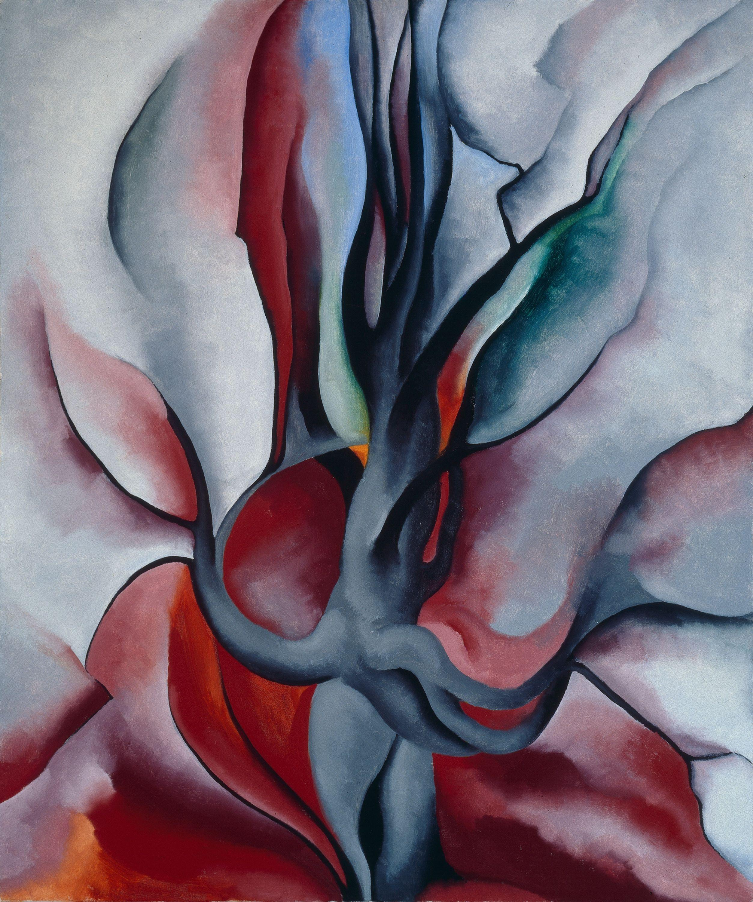

Spend a full minute with the painting below before you read anything past this line. Let your eye travel across the shapes slowly. Notice where the picture still looks like something specific, and where it starts to feel more like pattern and color than a literal tree.

O'Keeffe painted an actual stand of maple trees in autumn. The subject is completely recognizable: you know instantly that you are looking at foliage, not something invented from nothing. But look again at how she painted it. The individual leaves are gone. What remains are big, rounded masses of color, simplified almost to the edge of pattern. She did not abandon the tree. She distilled it.
It is tempting to think of abstract art as something an artist invents out of nowhere, with no connection to the real world. Some abstraction does start that way. But a huge amount of the abstract and stylized art you see, including O'Keeffe's, begins exactly where Studio 1 began: with a real object, observed carefully. The difference is what happens next.
Abstraction, in this sense, is the process of pulling an image away from a literal, photographic likeness while keeping its essence, the core visual idea that makes it recognizable as that thing. Along the way an artist makes deliberate choices: simplification (removing detail), exaggeration (pushing one quality further than reality), and stylization (giving the subject a consistent, invented visual language). Push far enough and you reach non-representational work, where the connection to any real object is gone entirely.
not a starting point.
This matters because it changes how you will work for the next two weeks. You are not being asked to invent something from a blank page. You are being asked to draw something real first, carefully, and then make a series of intentional decisions about what to simplify, exaggerate, or stylize. Every stage of that journey should be visible in what you submit.
You have spent eight Studios building the skill of accurate observation and decision-making: composition, color, space, pattern, meaning, identity. Transformation asks you to use every one of those skills and then deliberately break from strict accuracy, without losing control of the image. That is harder than either pure realism or pure invention: it requires knowing a form well enough to change it on purpose.
Your project for these two weeks is called From Study to Stylization. You will choose one simple object or natural form, draw it from direct observation, and then transform that same drawing into an original stylized or abstract composition, showing the stages of that transformation rather than only the final result.
▶ Before you read on, name one object near you that you think would still be recognizable even if you simplified it down to three or four shapes. Then open this.
- 1 Where Observation Becomes Invention · you are here. Abstraction as a journey from a real subject.
- 2 Georgia O'Keeffe: A Career of Looking Closer · her path from representational work to magnified abstraction (DAIJ analysis).
- 3 The Abstraction Ladder · skill builder: realistic to simplified to stylized to non-representational.
- 4 Cropping & Magnification · skill builder: how framing alone pushes an image toward abstraction.
- 5 Plan & Create · choose your object, plan the transformation, VR session, begin the artwork.
- 6 Refine, Reflect & Present · finish, self-critique, artist statement, portfolio.
O'Keeffe did not invent her maple trees from nothing. She looked, then she simplified, on purpose, again and again, until the painting held only what mattered. For the next two weeks you will take the same journey with one object of your own, and you will be able to show, step by step, exactly how you got there.